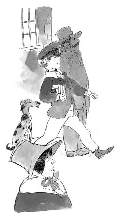

Oliver’ın tekrar Fagin’in eline düşmesi, düşünebileceğinizden çok daha kolay olacaktı. Sağlığı yavaş yavaş düzelirken, Bay Brownlow’un evinde gördüğü bütün o sevgi dolu bakımın karşılığını ödemenin bir yolunu bulmaya çalışıyordu. Bir gün postacı, Bay Brownlow’a bir paket kitap getirdiğinde bu şansı yakaladı, çünkü Bay Brownlow dükkâna geri göndermek istediği birkaç başka kitabı ulağa veremeden, adam gitmişti.
Oliver, “Lütfen izin verin de, onları ben götüreyim efendim!” diye yalvardı. “On dakika bile sürmez! Bütün yolu koşarak gidip gelirim!”
Bay Brownlow ona kitapları ve kitapçıdaki hesabı kapatması için beş pound’luk bir kâğıt parayı verdiği zaman Oliver’ın gözleri hevesle ışıldadı. Çabucak yola çıktı. Bay Brownlow’un onun için aldığı yeni takım elbisesinin içinde kendini çok şık hissediyordu. Bunlar Oliver’ın giydiği ilk yeni giysilerdi, çünkü düşkünlerevinde yalnızca başkalarının çöpe attığı paçavraya dönmüş eski elbiseler giyiyordu.
Tam kitapçıya ulaştığı sırada genç bir kadın yolunu kesti. Kadın kollarını Oliver’ın boynuna dolayıp ağlamaya başlayarak onu şaşırttı: “Ah, ulu Tanrım! Onu buldum! Sevgili küçük kayıp kardeşim! Onu buldum!”
Bu Nancy’ydi. Fagin ve Bill Sikes’ın içki içip sohbet ettiği bir meyhaneden yeni çıkmıştı. Çırpınıp duran ve kaçmaya çalışan Oliver’ı çok sıkı tutuyordu. Oliver ise, “Sen benim ablam değilsin! Değilsin! Benim ablam yok!” diye bağırıp duruyordu.
Oliver bir ara Bay Brownlow’un kitaplarının elinden alındığını hissetti, sonra da boynunun arkasına ağır bir darbe indi. Gürültüyü ve bağırışları duyan Bill Sikes meyhaneden çıkmış ve Oliver’ın Nancy’yle boğuştuğunu görmüştü. Bill, Oliver’a tekrar vurdu, sonra yakasını kavradı ve sersemleyen çocuğu, bir labirent gibi daracık, dolambaçlı sokaklardan sürükleye sürükleye, Oliver’ın, korkunç düşkünlerevinden bile daha çok korktuğu yere, Fagin’in inine götürdü.
Eve ulaşınca Fagin, Oliver’ın tepeden tırnağa titremesine sebep olan tehditkâr bir sesle, “Bu kadar iyi göründüğüne sevindim evlat!” dedi. Oliver kapana kısılmıştı! Bay Brownlow’un evindeki sevecen insanları düşününce, Oliver’ın yüreği burkuldu. Geri dönmediğini görünce, belki de Bay Brownlow’un beş pound’u ve değerli kitaplarıyla kaçtığını sanacaklardı. Güzel yeni takım elbisesinden söz etmeye gerek bile yoktu.
Oliver üzüntüden aklı başından giderek kendi kendine, “Eğer böyle düşünürlerse, buna dayanamam!” dedi.